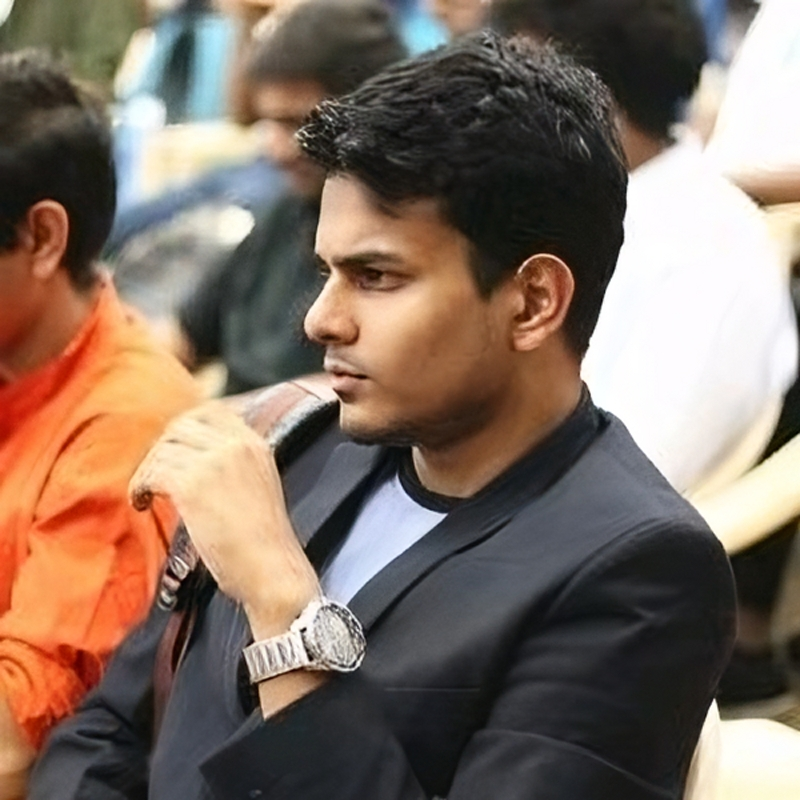

Hi, I am Subhransu Sekhar Bhattacharjee (Bangla: শুভ্রাংশু-শেখর ভট্টাচার্য), and also go as Rudra (রুদ্র). I am originally from West Bengal, India.
I am currently a University Research Scholar at the Australian National University, with the Intelligent Systems Cluster at the College of Engineering, Computing and Cybernetics since April 2023.
My doctoral research focuses on probabilistic inverse generative modeling in 3D for autonomous spatial-semantic reasoning. My supervisory panel includes:
I graduated with First Class Honours in Mechatronic Systems from the College of Engineering, Computing and Cybernetics at the Australian National University, minoring in Electronic Communication Systems and Mathematics, and ranked third in my cohort. My honours thesis, advised by Prof. Ian Petersen, was titled "On the Control Theory of Closed Loop Inertial Dynamics," and was later published as a journal paper J1. My academic journey began at the Vellore Institute of Technology, India, from where I transferred to ANU on a scholarship.
My research interests lie at the intersection of inverse models, 3D computer vision, and optimization, with a particular focus on applications in robotic vision. Some topics I look forward to working on in the future:
I have a deep interest in International Relations, Politics, and Law, stemming from my active participation in the South Indian MUN circuit. I specialized in economic committees representing Switzerland, but my standout performance was as the People's Republic of China in late 2020, after which I retired from MUNs. Currently, my hobbies include searching for forgotten books and exploring international music from the 1940s to the 1970s, listening to radio shows, and making cocktails when I get the opportunity.
As a film enthusiast, I am particularly drawn to temporally discontinuous films, which I believe require exceptional directorial skill. Christopher Nolan ranks as my favorite director, with 'Oppenheimer' and 'Interstellar' being among my top films, alongside 'Nayak' by Satyajit Ray, 'Shawshank Redemption', 'The 400 Blows', and 'Haider'. I also admire the works of Quentin Tarantino, Stanley Kubrick, Alfred Hitchcock, Francis Ford Coppola, and Indian directors like Anurag Kashyap and Vishal Bharadwaj. My favorite actors include Christoph Waltz, Robert Downey Jr., Edward Norton, Benedict Cumberbatch, Michael Fassbender, Olivia Colman, and Helena Bonham Carter.
In literature, I enjoy nihilistic poetry, with Charles Bukowski and Jaun Elia being notable favorites, despite the controversial aspects of Bukowski's work. My favorite authors are Alexandre Dumas, Ruskin Bond, Dan Brown, Richard Dawkins, Bertrand Russell, and Franz Kafka. I have a diverse taste in music, especially modern fusions of Western and Indian classical music, with artists like The Piano Guys, Gustavo Santaolalla, Estas Tonne, Ludovico Einaudi, Nina Simone, Kishore Kumar, and Nusrat Fateh Ali Khan ranking high on my list.
I am not too outgoing but I enjoy unusual hikes, ping-pong games, and swimming in the sea from time to time. I aspire to hit the gym very soon; as soon as Achilles catches up with the tortoise 😜.